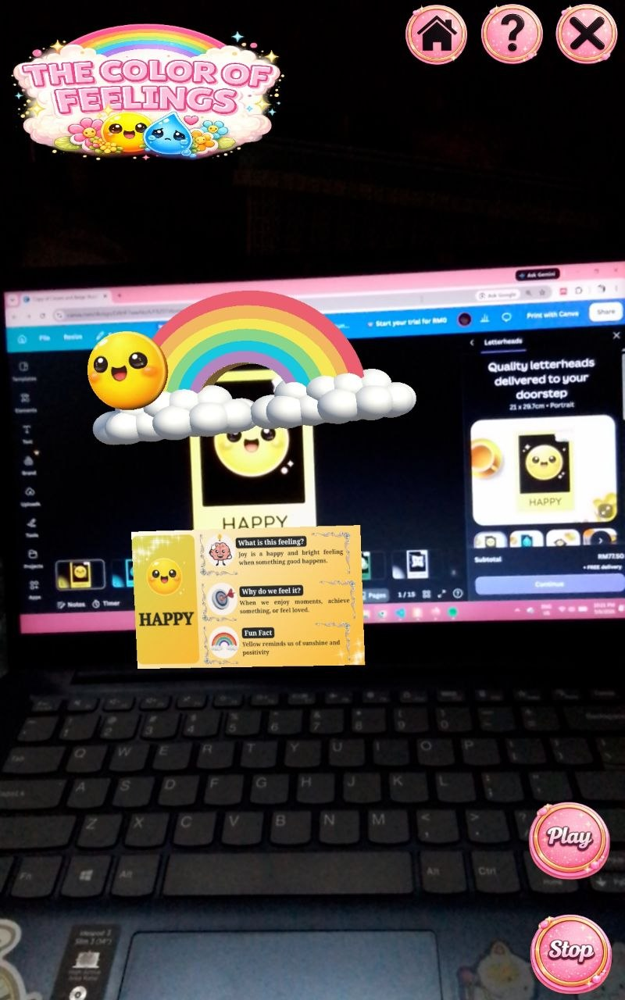
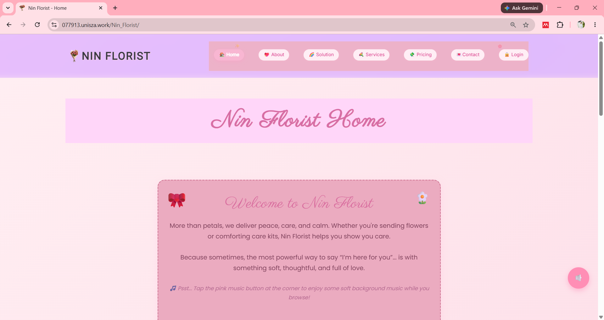
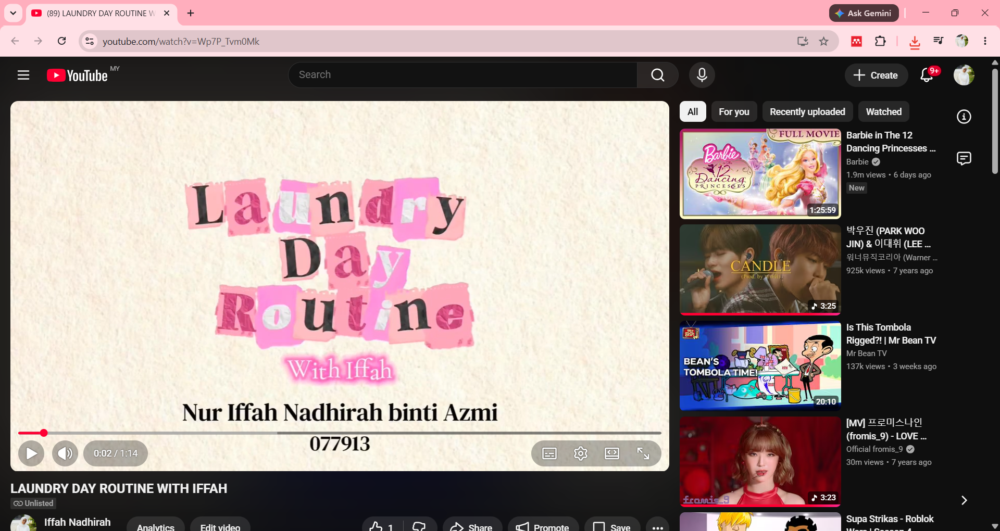
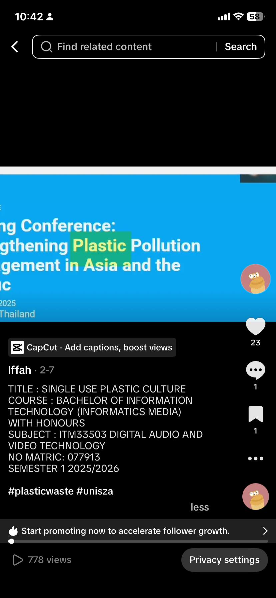

💼 My Projects Portfolio
This section showcases selected academic and creative projects completed throughout my studies in Information Technology (Informatics Media) at UniSZA.
This section showcases selected academic and creative projects completed throughout my studies in Information Technology (Informatics Media) at UniSZA.
Click to view project samples

Final Year Project: The Color of Feelings: AR Journey to Self-Awareness

Responsive portfolio website developed using HTML, CSS and JavaScript.
🌐 View Full Canva PortfolioClick to view project samples

🎬 3D Animation project involving visual storytelling, animation techniques and multimedia production.
🎬 Watch 3D Animation Project
🎥 Audio and Video Production project showcasing creative editing, storytelling and digital media production.
🎵 View Audio & Video Project